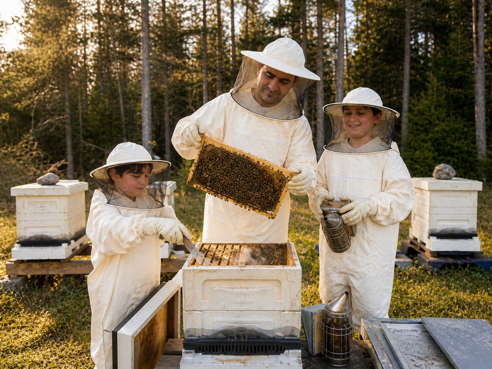

MEIDÄN TARINAMME
Mehiläismatkamme alkoi vuonna 2026.
Vuoden 2026 alussa päätimme perheenä aloittaa jotain meille aivan uutta – mehiläishoidon. Lähdimme liikkeelle täysin alusta, yhdessä oppien ja kokemusta kartuttaen.
Alusta asti mehiläishoito on ollut meille enemmän kuin vain hunajan tuottamista. Se on koko perheen yhteinen matka, jossa myös lapsemme ovat mukana. Yhdessä seuraamme mehiläisten elämää, opimme luonnosta ja iloitsemme matkan pienistä onnistumisista.
Mehiläisten parissa viettämämme aika on tuonut meidät lähemmäksi luontoa ja opettanut meille kärsivällisyyttä, huolenpitoa ja kunnioitusta mehiläisten tekemää arvokasta työtä kohtaan.
Tästä matkasta syntyi APINORDIC – nimi, jossa apis, latinan sana mehiläiselle, kohtaa pohjoisen luonnon.
Haluamme kasvattaa APINORDICia samalla tavalla kuin aloitimmekin: rauhassa, oppien ja yhdessä perheenä.
Tämä on meidän mehiläismatkamme.
Ja se on vasta alussa.